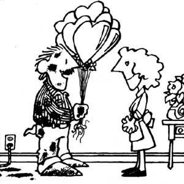

In issue 37, Bill Wodraska shared some of his thoughts regarding one of humankind's better ideas - barter - and offered up an interesting suggestion: "I'd like to see a continuing feature on barter and skill-and-labor exchanges," said Bill. "Maybe MOTHER could even swap subscriptions for contributions to the department." "You're on!" we replied ... and announced our still-standing offer. Anyone who sends us a short account, of an actual barter, that gets printed in this column (write Successful Swaps, THE Mother Earth News (restricted) 105 Stoney Mountain Road, Hendersonville, North Carolina 28791) will receive a 12-month subscription (new or extended) to MOTHER.
My wife and I are, exceedingly fond of perennials-the iris is our special favorite-and we used to spend many hours in the early spring, poring over seed catalogs and wishing we could afford to purchase the many beautiful varieties available. Unfortunately, it would have cost a small fortune to buy all of our choices in one season, so we resigned ourselves to dreaming. This year however, we were able to make those fantasies come true-and triple our perennial bed-through bartering.
The farm on which we live, at one time a country squire's estate, has thousands of daffodils arranged in formal and naturalized beds. Years of neglect had led to overcrowding, though, and the plants had to be thinned if they were to bloom. After digging the beds, replanting, and giving away bulbs to a local park and various friends, my wife realized that we still had more than enough for the property. So she took out an ad in the county newspaper proposing a "perennial swap".
Surprisingly, many of the responses were from people who invited us to thin their perennial beds in exchange for all the bulbs we wanted. We were delighted to oblige, and everything worked out beautifully: Overcrowded gardens were restored health, while we reaped a supply of irises, grape hyacinths, and lilies in exchange for only a few hours of digging. In short, barter turned a garden chore into a plant bonanza for us!
M.M.
New Jersey
I've found swapping to be a natural way of doing business, and I remember-with pleasure-such trades as a peacock for a canary . . . a milking doe for a heifer calf ... and a runt pig that was given to me as a kind of "thank you" for friendship.
This past summer, however, I arranged my first ongoing swap. When my lawn mower broke down, I discovered that it would be less expensive to hire a helper to cut the grass than to overhaul (or replace) the aging trimmer. Initially, I assumed I'd have to pay a worker by the hour ... however, while chatting with my prospective employee, I found out that he had a hankering to take his son camping but couldn't afford to buyor rent-the necessary equipment.
Well, I just happened to have accumulated a good bit of outdoor gear over the years, and much of it was lying idle in the attic. A trade was effected, and in exchange for the loan of my tent, canoe, paddles, life jackets, and outdoor cooking gear, I got one month's mowing ... plus the satisfaction of knowing my equipment was helping someone else enjoy the beauty and excitement of the wilderness.
C.S.
Indiana
Back in 1981, I started my own part-time bootstrap business: "The Balloon Shoppe" delivers inflated bouquets for birthdays, anniversaries, holidays, and other special occasions.
Recently, though, a traffic accident left my delivery van with a broken windshield and a bent window frame, and-when I checked at a local body shop-I found that repairs would be quite expensive. I decided to propose a swap, and since it was then the second week in February, I asked the shop owner what he planned to give his wife for Valentine's Day. He hadn't thought about it at all, so I suggested a beautiful balloon bouquet ... which, together with a small amount of cash, he accepted in trade for repairs on the van. That balloon/body-work barter made a happy holiday for all of us!
G.M.
North Carolina
With four children to feed and clothe, my husband and I settled into an economical, yet comfortable, mobile home and began to develop a back-to-basics lifestyle. We now grow our own (sumptuous!) vegetables, and I make clothes for the youngsters on an old -but serviceable-sewing machine.
In order to earn extra money, however, I decided to put my degree in accounting to work by offering to prepare income tax returns for people in the area.
It was easy enough to establish a fair price for my services ... but it soon occurred to me that what I really needed wasn't money so much as fabric to make our family's garments, and equipment and supplies for cultivating and preserving our produce. With this in mind-and operating on the principle that word-of-mouth advertising was in keeping with our lifestyle-I contacted some people who might want my assistance and could, in exchange, supply the items I needed. The response was phenomenal: It seemed as though everyone had just been waiting for somebody to offer a swap!
An old friend in the fabric business ... a retired sewing Machine repairman ... people who could do tilling in the spring ... plumbers ... carpenters ... and more were soon arranging swaps with me. I found that retired folks, in particular, were storehouses of skills and services ... and were glad to barter for them. Now, I don't have to contact anyone: People call me every year to "work out a swap".
R.W.M.
Iowa
As a lifelong country dweller, I've always been involved in bartering. However, inspired by your Successful Swaps tales, my family recently made some exchanges that were larger and more imaginative than usual.
[1] Our sheep ranch is located in the windswept hills along the Wyoming/Color-do border. Wildlife abounds in the region, and-because of the terrain and the abundance of rabbits-the area is ideal for hunting with falcons. Therefore, for a few weeks every year, several enterprising easterners now trade their labor-about six hours a day helping with the chores-for room (a sheep wagon), board, and a place to fly their magnificent birds.
[2] A few years ago we acquired some komondor livestock guard dogs to protect out lambs from predators. Our neighbors, a young couple who raise purebred Ranibouillets, admired the dogs, so we recently proposed a swap: a registered komondor puppy, who'd been raised with lambs, for two of their top-quality Rambouillet rams.
[3] Last year I lost my "good right arm". my herding sheepdog. And since I think a dependable canine is a necessity when handling a flock, I've been on the lookout for a replacement ... but until a few weeks ago, I couldn't find one that had what it takes. Then an old friend from college called me. Lo and behold, she now raises border collies! Before the phone call was over, wed negotiated a swap: a butchered lamb-cut, wrapped, and frozen-for one of the puppies. In addition, I agreed to peddle the rest of a litter in our area ... while she sold my frozen lamb to her urban neighbors.
Everyone's opportunities are unique, but one thing's for sure: No matter how isolated your home may seem, there's always an opening for barter!
S.S.O.
Colorado
|
 |
|
|